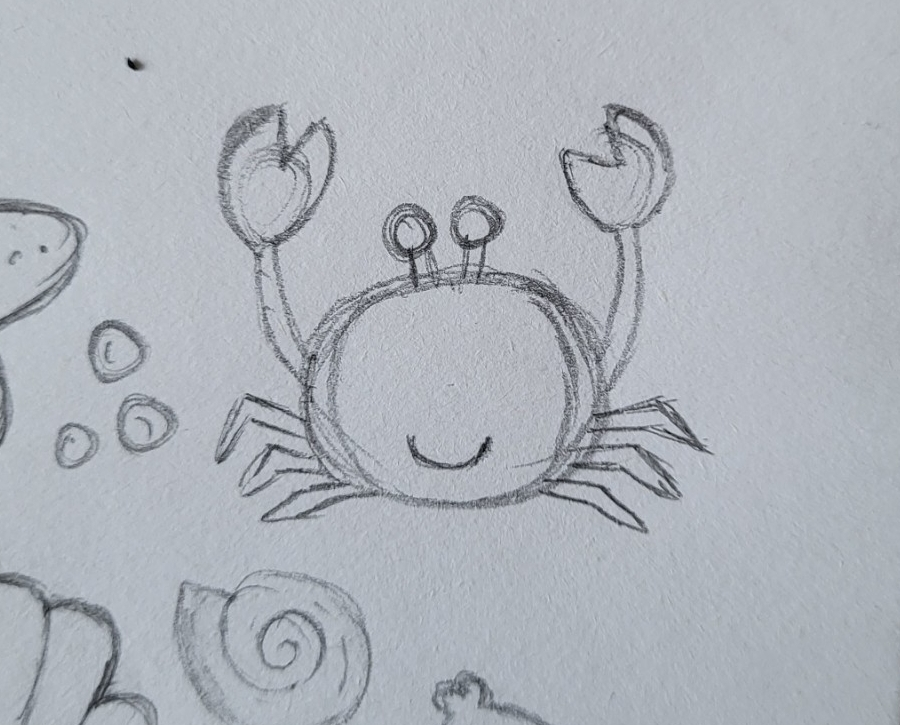
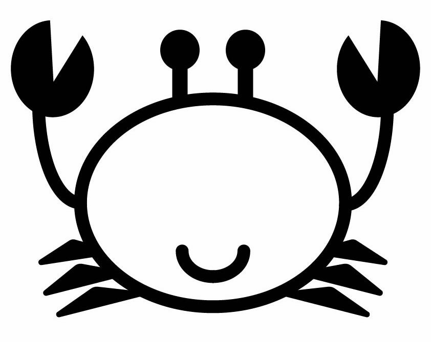
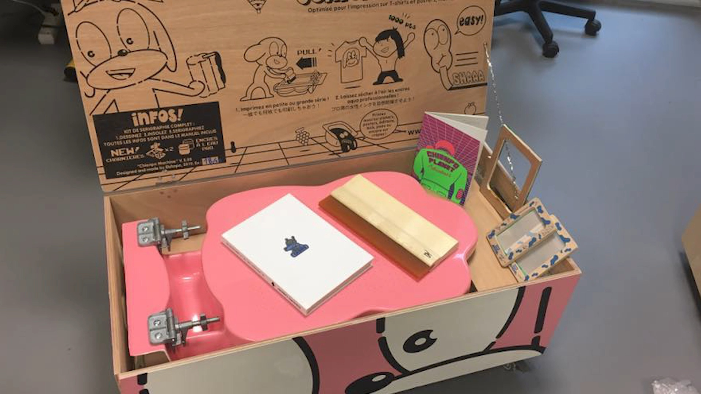
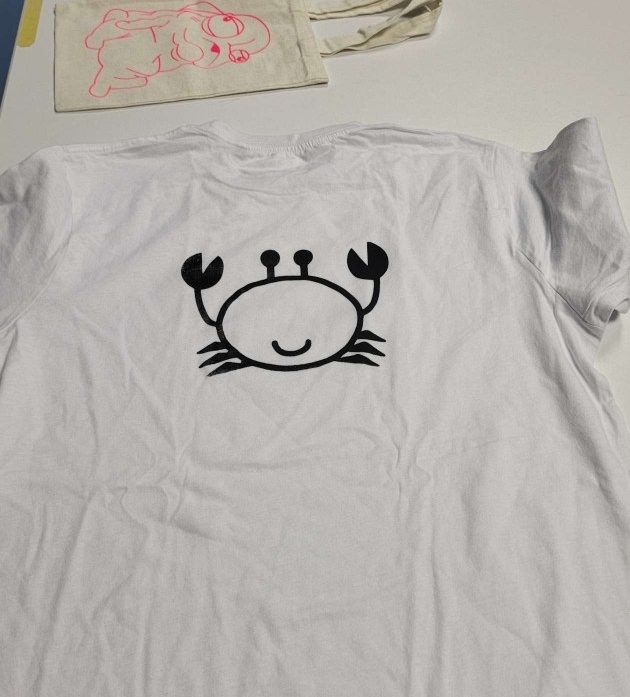

Le Brief
Initiation à la sérigraphie.
J’ai choisi de réaliser un crabe, à partir d’un doodle que j’avais dessiné auparavant.
Initiation à la sérigraphie.
J’ai choisi de réaliser un crabe, à partir d’un doodle que j’avais dessiné auparavant.
J’ai d’abord réalisé ce dessin lors d'un atelier graphisme, où nous devions créer des dessins Doodle. Lors de l’atelier sérigraphie, j’ai choisi de reprendre ce motif et de le retravailler sur Illustrator avant de l’utiliser pour l’impression.


Après avoir préparé le fichier vectorisé, nous avons procédé à l’insolation de l’écran (exposition du pochoir à la lumière UV), puis au rinçage pour éliminer les zones non exposées et révéler les parties imprimables. Nous sommes ensuite passés à l’impression sur t-shirts, en appliquant l’encre noire à la raclette, avant de terminer par le séchage afin de fixer durablement l’encre.

